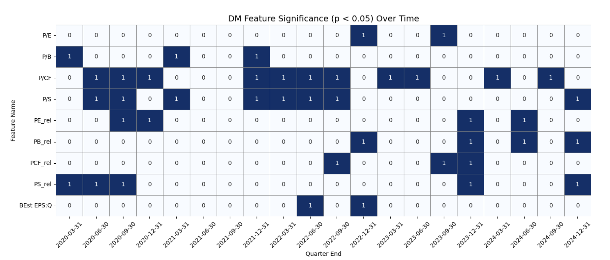

EM vs DM: Predictive Power of Valuation Factors
A comparative study of valuation factors across Emerging Markets (EM) and Developed Markets (DM). Building on Guerard et al. (2022), we run time‑series cross‑sectional and pooled regressions with EM interaction terms to test whether signals such as book‑to‑price, earnings‑to‑price, price‑to‑cash‑flow, and price‑to‑sales differ in predictive power across markets. Results show no statistically significant average differences between EM and DM, though relative price‑to‑sales (PS_rel) appears more persistently significant in EM; factor effectiveness is time‑sensitive and context‑dependent.
Data & Universe
- EM: MSCI Emerging Markets constituents; DM: MSCI World (ex‑EM) / S&P 500
- Period: 2014‑01‑01 to 2024‑12‑31 (quarterly)
- Normalization of factors; forward‑fill for missing values
Factors
- Valuation ratios: P/E, P/B, P/CF, P/S
- Relative valuations (5‑year roll): PE_rel, PB_rel, PCF_rel, PS_rel
- Forward‑looking: BESt EPS:Q (analyst forecasts)
Methodology
- Cross‑sectional regressions per market and period
- Pooled model with EM interaction: Return = α + β·Factor + γ·(Factor×EM) + ε
- t‑tests, Wilcoxon rank‑sum, p‑value tracking for significance

Results (Brief)
- EM: PS_rel and PB_rel recur as significant in recent years
- DM: P/CF and P/S appear more often significant
- Across‑market mean coefficient differences are not significant at p<.05
Discussion & Takeaways
- EM offers potential for delayed pricing/less coverage, but signals vary through time
- Favor adaptive factor weights over static tilts; consider robust regression
- Limitations: forecast sparsity in EM, linearity assumptions, missing macro/liq controls
Key Features
- Comparative EM vs DM factor framework with pooled interaction tests
- Visual significance heatmaps, coefficient trends, and summary tables
- Practical guidance: adaptive weights & robust methods for noisy EM data